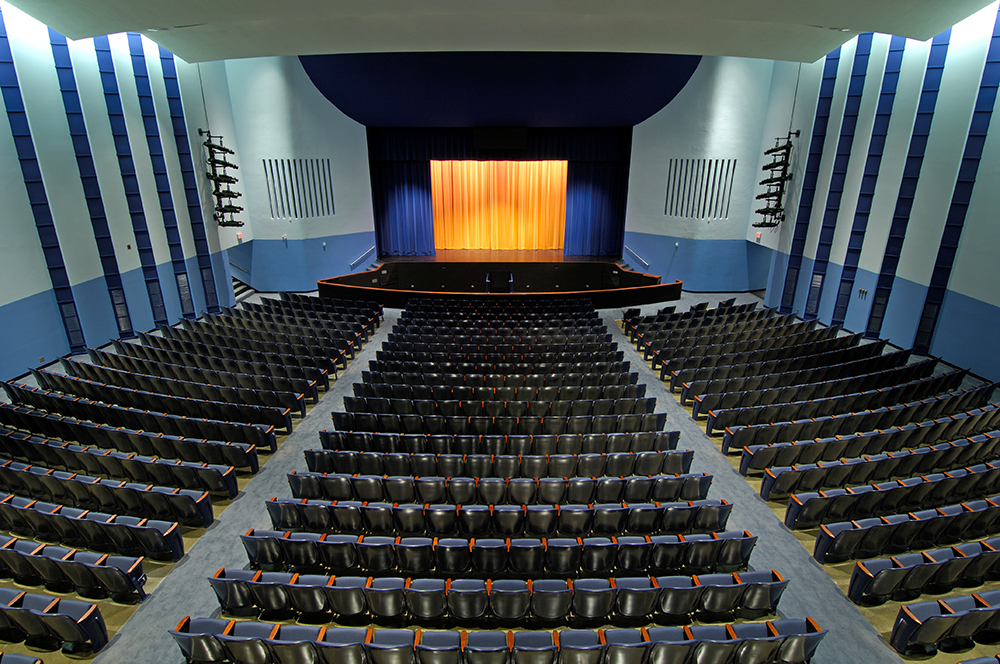
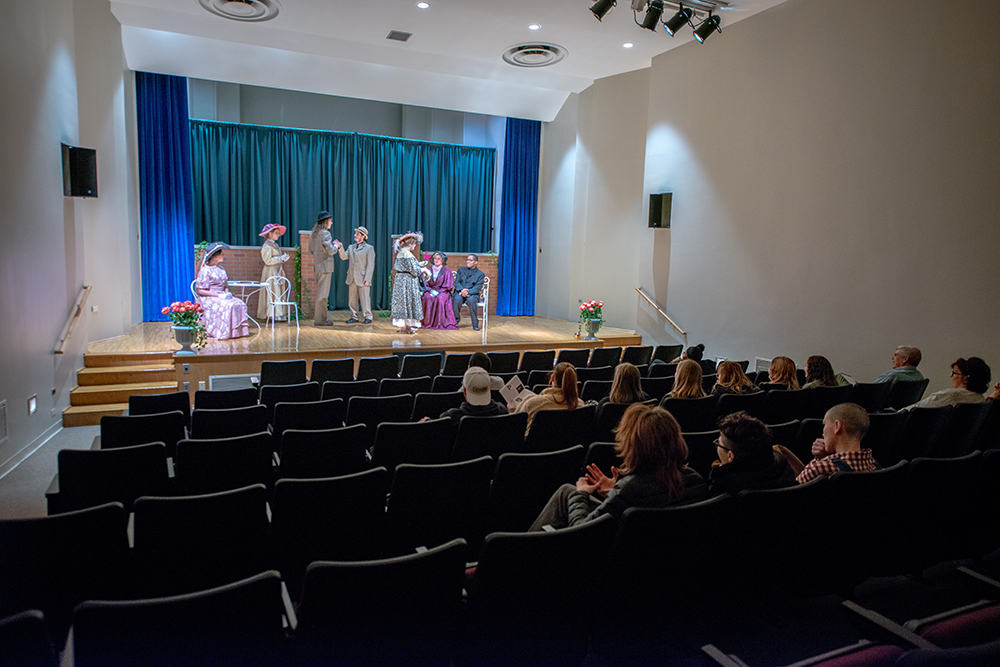
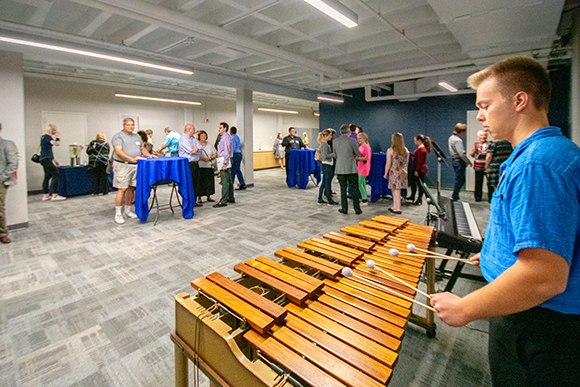

Facilities
.jpg)

The University theater houses approximately 1123 people. Featuring a stage that is over 40 feet wide complete with a concert sound system and with full stage lighting. Located in front of the stage is a five foot musicians pit that holds over 50+ people! The dressing rooms can be accessed through the theater as well, which contains four dressing suites, and a monitor that allows for performers to watch the show from off-stage. The University Theatre often times holds the spring show, which allows for larger productions such as musicals.

The Recital Hall offers an intimate performing space. Typically used for fall our productions, the Recital Hall houses over 90 seats as well as sound and lighting systems. The design allows for perfect acoustics, making this the perfect space for any small show, speech, or you guessed it, recital.

The rehearsal room offers a multipurpose space used by all members of the Renaissance program. The rehearsal space is located on the bottom floor of the classroom building, directly underneath the University Theatre stage. The space houses larger instruments, music stands, and any other equipment that one might find in a music room. A door at the end of the room allows for quick and easy access to the theater, which makes this the perfect space to warm up for any performance!
Performing on stage isn't for everyone, and that's why we offer options for everyone in the theatre program. Students can help with props, set, tech, and much much more. Here at MSJ, we provide spaces for these options as well.
The theater shop is where all the hard work backstage starts. Located adjacent to the theater stage, the shop is where students can learn how to use power tools, as well as build, assemble, and sometimes paint an actual set that will be used on stage.
Located just outside the Recital Hall, the prop room houses all the props and costumes that the theater program has collected over the years. Anything you need, you'll find in this room.